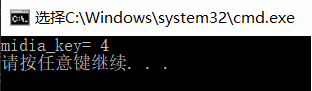

Median of Two Sorted Arrays
问题：
There are two sorted arrays nums1 and nums2 of size m and n respectively.Find the median of the two sorted arrays. The overall run time complexity should be O(log(m+n)).
中位数的概念
- 将一个集合划分为两个长度相等的子集，其中一个子集中的元素总是大于另一个子集中的元素。
方法： 分治法
算法分析
- 将有序数组分成两部分，可以得到如下关系式:
len(left_part)=len(right_part) max(left_part)≤min(right_part)
| left_part | right_part |
|---|---|
| A[0], A[1], ..., A[i-1] | A[i], A[i+1], ..., A[m-1] |
| B[0], B[1], ..., B[j-1] | B[j], B[j+1], ..., B[n-1] |
- 那么，中位数就是：
代码如下：
int findMedianSortedArrays(int A[],int A_len, int B[],int B_len) {
int m=A_len,n=B_len;
int iMin = 0, iMax = m, halfLen = (m + n + 1) / 2;
while (iMin <= iMax) {
int i = (iMin + iMax) / 2;
int j = halfLen - i;
if (i < iMax && B[j-1] > A[i]){
iMin = i + 1; // i is too small,需要增大i，减小j
}
else if (i > iMin && A[i-1] > B[j]) {
iMax = i - 1; // i is too big,需要减小i，增大j
}
else { // i is perfect，i是临界值，0或者m
int maxLeft = 0;
if (i == 0) { maxLeft = B[j-1]; }
else if (j == 0) { maxLeft = A[i-1]; }
else { maxLeft = max(A[i-1], B[j-1]); }
if ( (m + n) % 2 == 1 ) { return maxLeft; }
int minRight = 0;
if (i == m) { minRight = B[j]; }
else if (j == n) { minRight = A[i]; }
else { minRight = min(B[j], A[i]); }
return (maxLeft + minRight) / 2;
}
}
}
运行结果:
数组元素为:array1[3] = {1,2,7}; array2[3] = {3,5,6};

算法复杂度分析:
- 时间复杂度：查找的区间是[0,m],每次循环之后，查找区间的长度都会降为原先的一半。所以，最多执行次。 由于,所以时间复杂度为。